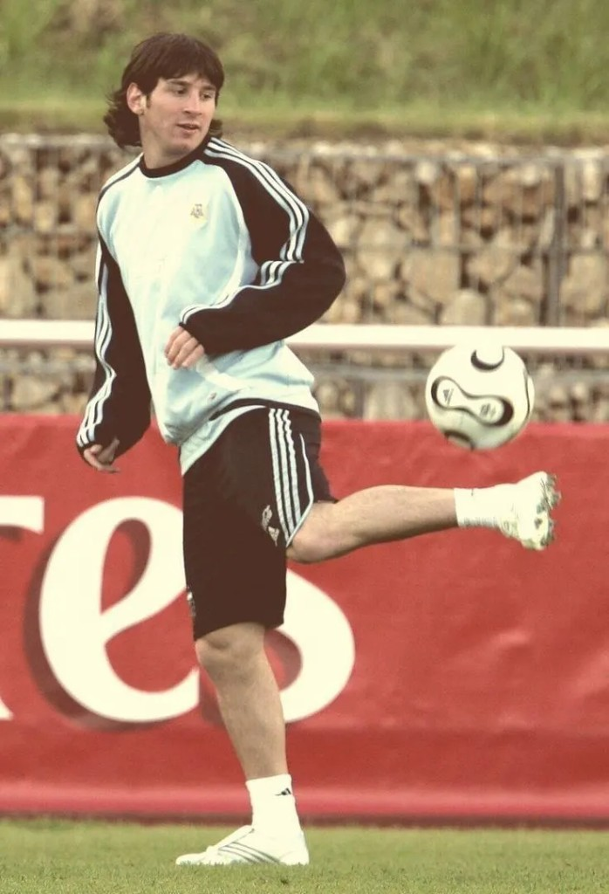
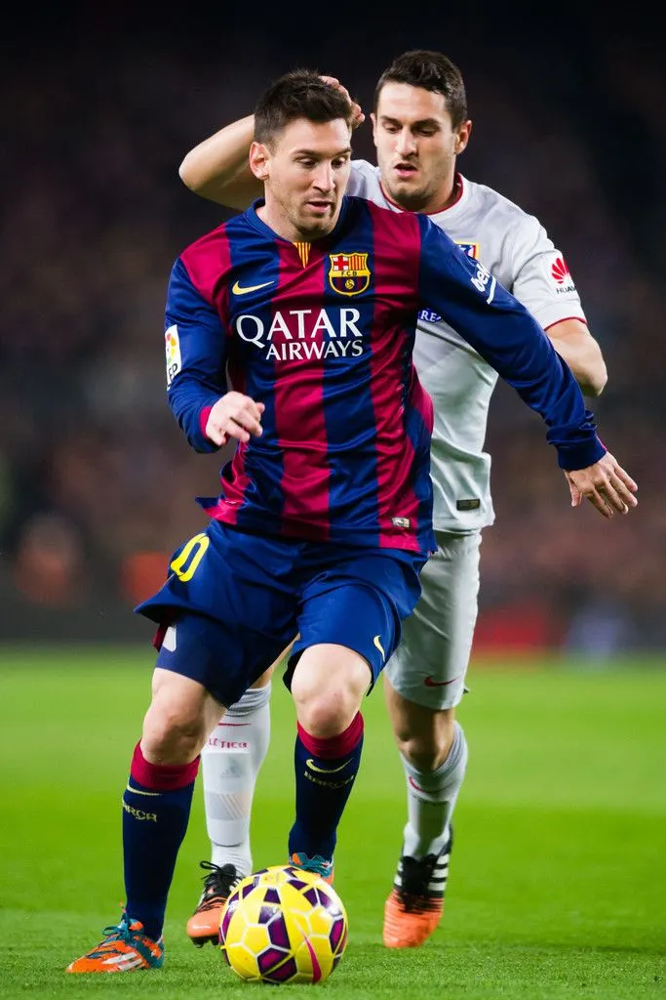
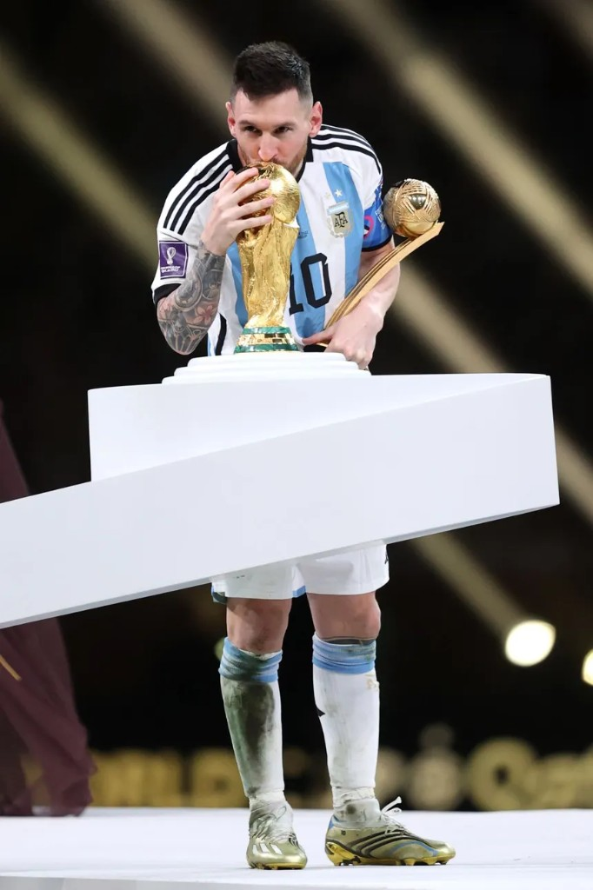
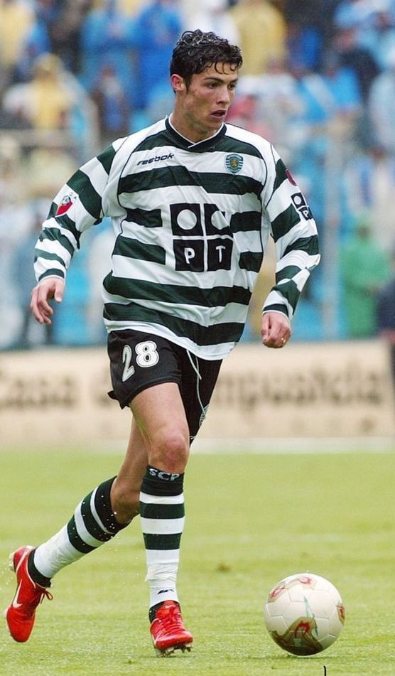
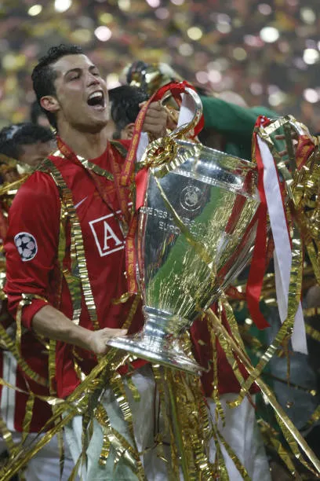
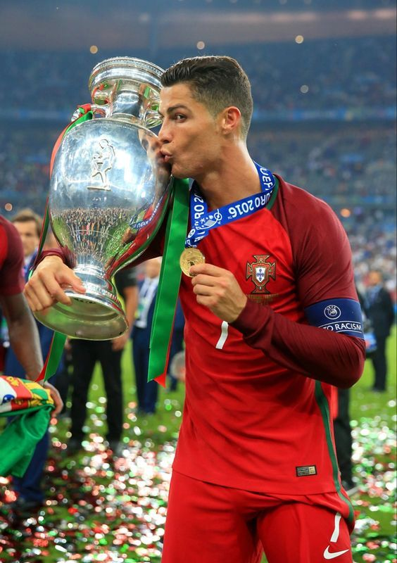

Lionel Messi was born on June 24, 1987, in the city of Rosario, Argentina, a place where football is deeply woven into everyday life. From a very young age, Messi showed a natural connection with the ball. Playing in the streets and local pitches of Rosario, he quickly stood out among other children for his balance, close control, and ability to dribble past players much older than himself.
At the age of six, Messi joined the youth team of Newell's Old Boys, one of Rosario's most historic clubs. There, he became the centerpiece of a youth team famously nicknamed "The Machine of '87", which dominated local youth competitions.
However, when Messi was eleven years old, he was diagnosed with growth hormone deficiency. The treatment was expensive and threatened to end his football dream. In 2000, FC Barcelona offered to cover the medical treatment and invited him to join their youth academy, La Masia.
Moving to Spain at just thirteen years old, Messi began his journey through Barcelona's academy ranks, eventually making his first-team debut in 2004 at the age of seventeen.

At Barcelona, Lionel Messi developed into the central figure of one of the greatest club teams in football history. Under Pep Guardiola, Barcelona perfected a style of play built around possession, constant movement, and technical precision. Messi thrived within this system, combining extraordinary dribbling, vision, and finishing to become the team's most influential player and creative force.
Between 2009 and 2012, Messi reached a level of consistency rarely seen in professional sport. During this remarkable period he won four consecutive Ballon d'Or awards, dominating European football while scoring goals at an unprecedented rate and consistently creating chances for his teammates.
In 2012 he set a world record by scoring 91 goals in a single calendar year, a historic achievement that highlighted his unmatched dominance during Barcelona's golden era.
By the time he left the club in 2021, Messi had become Barcelona's all-time top scorer, a symbol of the club's identity, and the defining player of a generation of football.

For much of his career, Lionel Messi's greatness was unquestioned at club level, yet international success with Argentina remained the one missing chapter in his story. After several painful defeats in major finals, including the 2014 FIFA World Cup and consecutive Copa América tournaments, many wondered whether Messi would ever lift a major trophy with his national team.
In 2021, that narrative finally changed. Messi led Argentina to victory in the Copa América, defeating Brazil in the final at the Maracanã. The triumph marked his first major international trophy and lifted a weight that had followed him for years.
The defining moment of his legacy arrived at the 2022 FIFA World Cup in Qatar. Messi delivered one of the greatest tournament performances in football history, guiding Argentina to the title while combining leadership, creativity, and decisive goals.
By lifting the World Cup trophy, Messi completed football's greatest individual journey and secured his place among the most iconic athletes in sporting history.


Cristiano Ronaldo was born on February 5, 1985, in Funchal on the Portuguese island of Madeira. Growing up in a modest household, football quickly became his greatest passion. From a young age, Ronaldo displayed extraordinary speed, determination, and an intense desire to improve, often spending hours practicing with the ball.
At the age of eight, he joined the youth team of Andorinha, a local club where his father worked as a kit man. His talent soon caught the attention of larger clubs, and by the age of twelve Ronaldo moved to mainland Portugal to join Sporting CP's academy in Lisbon.
The move meant leaving his family behind at a young age, a challenge that strengthened his discipline and ambition. At Sporting's academy he refined his technical ability, developing the explosive pace and dribbling that would later define his early career.
In 2003, after an impressive performance against Manchester United in a friendly match, the English club signed Ronaldo at just eighteen years old, marking the beginning of his journey to global stardom.

Cristiano Ronaldo's breakthrough came during his time at Manchester United under manager Sir Alex Ferguson. Initially known for his flair and dribbling ability, Ronaldo rapidly developed into a complete attacking player, combining technical skill with extraordinary athleticism and discipline.
During the 2007–2008 season, Ronaldo reached a new level of performance, scoring 42 goals and leading Manchester United to both the Premier League title and the UEFA Champions League trophy. His performances earned him the 2008 Ballon d'Or, marking his arrival among the world's elite footballers.
In 2009, Ronaldo made a historic move to Real Madrid for a then world-record transfer fee. At Madrid he evolved into one of the most prolific goal scorers in football history, consistently delivering decisive performances in the UEFA Champions League.
His combination of speed, aerial ability, and relentless work ethic transformed him into the defining figure of Real Madrid's most successful modern era.

Throughout his career, Cristiano Ronaldo built a reputation as one of the most driven and disciplined athletes in modern sport. His combination of physical power, technical precision, and relentless dedication allowed him to succeed across multiple leagues, including England, Spain, and Italy.
With Real Madrid, Ronaldo helped lead the club to an extraordinary era of European dominance, winning four UEFA Champions League titles between 2014 and 2018. During this period he became the competition's all-time leading scorer, delivering decisive performances in the biggest matches.
At international level, Ronaldo achieved his greatest success in 2016 when he captained Portugal to victory in the UEFA European Championship. The triumph marked a historic moment for Portuguese football and cemented Ronaldo's status as the nation's greatest player.
Beyond trophies and records, Ronaldo's legacy is defined by his mentality and longevity. His relentless pursuit of excellence has inspired millions of athletes and redefined what dedication in professional sport can achieve.